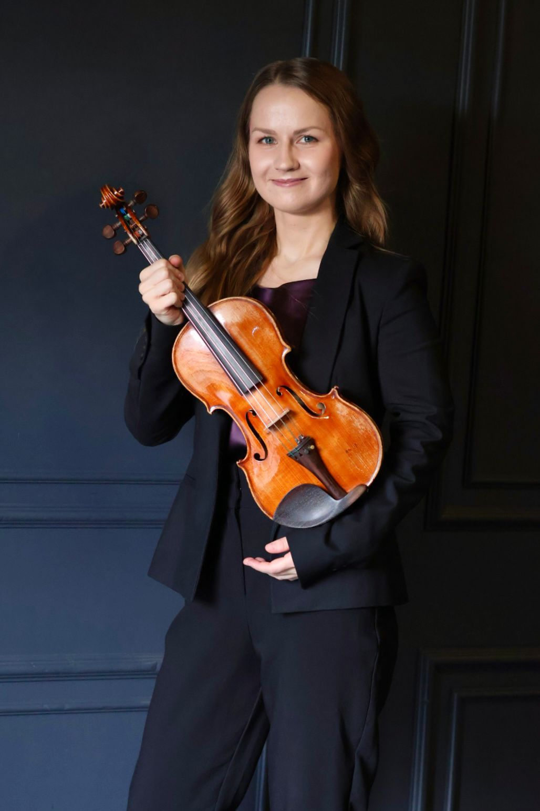
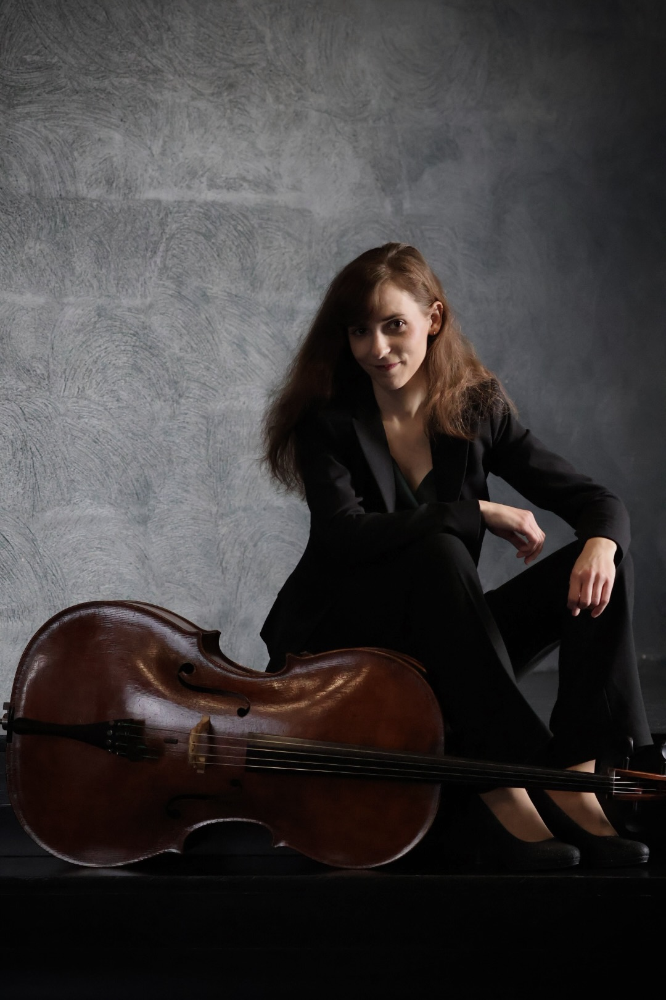
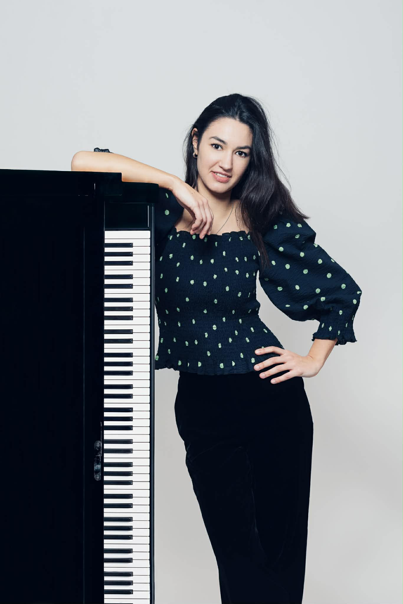

Trio Callistó brings together Merily Leotoots (violin), Anna Ryland-Jones (cello), and Eliza Agajeva (piano), three musicians with diverse international backgrounds and a shared passion for chamber music. Alongside their work as an ensemble, each maintains an active career as a soloist, chamber musician, and collaborative artist.

Merily Leotoots is a violinist whose playing combines technical clarity with expressive depth. She is known for her dynamic presence and thoughtful interpretations that balance sensitivity and intensity. As both a soloist and chamber musician, she brings precision, imagination, and a distinctive sense of style to her performances.
She began her musical journey at the Keila Music School, where she studied violin under Leena Laas. In 2014 she graduated from the Tallinn Music High School in the class of Professor Mari Tampere-Bezrodny and Sigrid Kuulmann. She continued her studies at the Estonian Academy of Music and Theatre, earning a master’s degree under Professor Tampere-Bezrodny. At present she pursues private studies with the world-renowned violinist and pedagogue Professor Pierre Amoyal.
She has also studied at distinguished institutions such as the Guildhall School of Music and Drama in London under Professor Ofer Falk and the Musik und Kunst Privatuniversität der Stadt Wien with Lidia Baich. Merily has participated in numerous masterclasses led by acclaimed professors including Kolja Blacher, Pavel Berman, Petru Munteanu, Natalia Lomeiko, and Sophia Jaffé. In 2025 she was selected for the prestigious Sarasate Academy in Spain, which invites outstanding string players from around the world. She has also refined her skills in Italy through the Young Classic Europe courses.
Chamber music lies at the heart of her artistic identity. She performs actively with several ensembles, including the violin–cello Duo EnPassant, a violin–piano duo with Joonatan Jürgenson, the piano trio Trio Callistó, and the piano quartet Quattuor Artium. With the latter, she appeared in February 2025 at the renowned Wye Valley Chamber Music Festival in England, giving the world premiere of Estonian composer Artur Lemba’s Piano Quartet. Her development as a chamber musician has been shaped by distinguished mentors such as Marje Lohuaru, Evgeny Sinaisky, Matthew Jones, and Jacqueline Ross.
Merily also performs with the Kiili Early Music Ensemble, with whom she has toured Estonia, Spain, Greece, and Ireland, presenting early music in historically informed style. As a soloist and chamber musician she has appeared in France, Austria, Germany, the United Kingdom, Greece, and throughout Europe.
Merily’s artistic vision bridges historical awareness with a modern interpretive voice. She is particularly drawn to projects that connect narrative and performance, exploring links between literature, history, and music. Alongside her concert activity, she continues to develop creative initiatives that bring classical music to new audiences through innovative formats and collaborations.

Anna Ryland-Jones is a versatile cellist whose performances unite warmth of tone with refined musical insight. Known for her expressive phrasing and natural communicative presence, she brings both poise and imagination to the stage. Equally at home in chamber music and orchestral repertoire, she combines technical finesse with a deep sense of artistic collaboration. In addition to her work with Duo EnPassant and Quattuor Artium, she performs regularly with the piano trio Trio Callistó.
Anna began cello studies under the guidance of her mother before continuing at the Royal Northern College of Music, where her principal teachers were Emma Ferrand and Petr Prause. She went on to complete her master’s degree at the Guildhall School of Music and Drama in the class of Tim Lowe. She has further developed her artistry in masterclasses with renowned musicians such as István Várdai, Adrian Brendel, Pierre Doumenge, Indrek Leivategija, and Maria Kliegel.
Chamber music has long formed the heart of Anna’s musical identity. She was a founding member of the Elgar Ensemble in the United Kingdom, giving regular performances in London and Malvern for more than two years. With this ensemble she took part in the Wye Valley Chamber Music Festival’s summer course in 2022 and returned in 2023 as an invited artist. As cellist of Quattuor Artium, she performed at the 2025 Wye Valley Festival, presenting the world premiere of Artur Lemba’s Piano Quartet.
Anna also performs with the Kings Chamber Orchestra, appearing throughout the United Kingdom, including the Île Joyeuse Summer Festival on Jersey in 2022. In recent seasons she has worked as a freelance musician with several Estonian orchestras and has appeared in chamber collaborations with Estonian artists including Merily Leotoots, Hans Christian Aavik, Marten Meibaum, and Joonatan Jürgenson.
Dividing her time between London and Tallinn, Anna maintains an active and expanding career across the United Kingdom, Estonia, and Finland.

Eliza Agajeva is a pianist whose playing is characterised by elegance, precision, and subtlety. Her interpretations combine a clear sense of form with a refined attention to detail, highlighting the inner drama and colour of the music.
She began piano studies at the age of seven at the Tallinn Music High School with Ira Floss. In 2013, she continued her education at the Amadeus International School Vienna, studying in the piano class of Austrian pianist Paul Gulda. After successfully graduating in 2017, Agajeva pursued further studies at the Musik und Kunst Privatuniversität Wien with Professor Dr. Johannes Kropfitsch, earning both her bachelor’s and master’s degrees under the guidance of Johannes Kropfitsch and Gerhard Geretschläger.
In addition, she obtained a bachelor’s degree in instrumental and vocal pedagogy at the Universität für Musik und darstellende Kunst Wien with Konstantin Semilakov. She is currently studying piano duo at the Universität für Musik und darstellende Kunst Graz under Professors Gil Garburg and Sivan Silver-Garburg.
Masterclasses and collaborations with prominent musicians, including Till Fellner, Anne Queffélec, Amandine Savary, Evgeny Sinaiski, Ivari Ilja, and Arturs Cingujevs, have played a significant role in her development. As a concert pianist, Agajeva has performed at prestigious venues, including Tokyo’s Suntory Hall, Munich’s Gasteig, and the Vienna Musikverein.